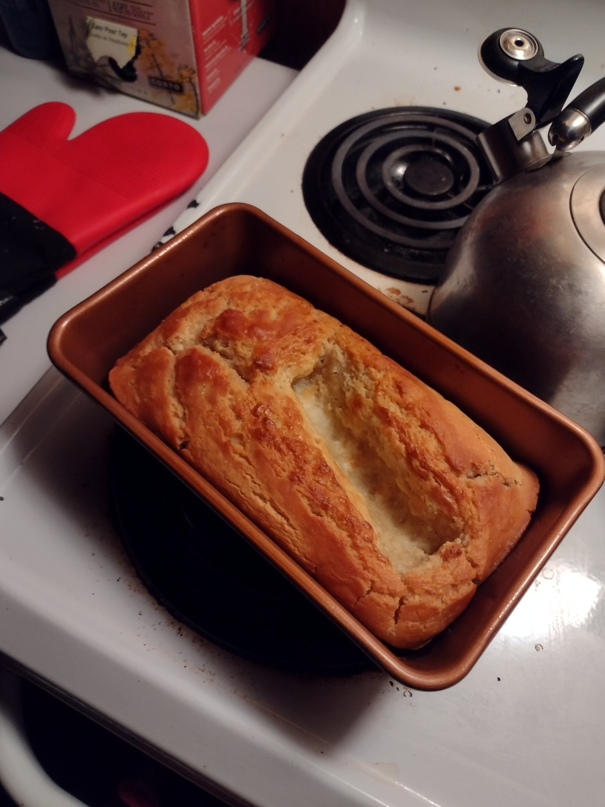

Behold The Cronchy Brod

"Is bred, bred? Or bred is bred?"
Okay so beer bread is like bread, right? And what is bread made of? Flour. That's right. And beer? It's just spoiled bread. Spoiled so long it became liquid bread. So beer bread is just spoiled bread water bread. And all that compounding bready breadness makes it really crunchy.
So it's like bread, but if the crust was toast, and the not-crust was normal bread. But also it's like really good.
Breadstuffs. Hah, get it? I don't
Oh do note, that whatever beer you use, does affect the bread. So like if you want a more casual bread flavor, you can use lite beer. Or is it light? I don't know, the brighter one. Dark beer makes it a lot more bitter, like unsweetened chocolate.
So to make liquified bread bread, you need
- A whole bottle of liquidized bread. Or uh, 12 ounces (pick whichever beer's your fancy, as the beer type doesn't change the breadening process much)
- 3 cups flour
- 3 teaspoons baking powder
- 1 teaspoon salt
- 1/4 cup of sugar (You can add a little extra if you use one of those chocolate beers. Like 1/2 a cup total is pretty good)
- 1/2 cup melted butter. Supposedly half that is okay also.
- That's it really
- No really I swear
- You're already using bread to make the bread, you don't need to add much else
- Don't forget to steal 10 extra minutes from the Time God if your house is really high. All those drugs make the bread cook slower.
Things to do
- Mix everything, except the butter. Or do you add the butter to the mix? Uh...
- Pour the bread water bread soup into a pan. Ensure non-sticking protocols in the event you forgot to unstick your pan.
- Put water bread bread soup that is soon to be bread water bread soup bread into your local fire box.
- Make numbers on fire box say 00:60. (Or sixty minutes) (Don't forget that weird altitude thing)
- And this is the most important step. Don't forget this one. Once the big glowy numbers on the fire box say 00:00, and it makes a beep, or beeping noise, remove the pan holding your super bread bread from the fire box. Don't forget your +3 fire resistance gloves before handling the hotening bowl for bred.
- And then let your bread water bread soup bread cool down for a bit, so it doesn't crumble under the pressure of living up to your expectations of not crumbling.
- Haha lol nope, you're on your own gettin that thing outta there. Haha, suckerrrr
Shouldst thou desire
You can leave
Have some more bread for your eyeballs
Oh and this is a perfect example of why you use melted butter. That loaf was all weird and soft where the whole stick of butter just molded the thing around it. You can put the butter on top, but I think We put the butter in the mix for some reason generally?
So if beer is just bread that has been liquified, could you make beer bread and then ferment that into beer for beer bread? Could you make beer bread beer bread beer bread? Could you go down this chain a hundred times and create some immortal entity of breadier bread? Would you even be able to taste it? What if you did that twice so you could use one for super bread, and the other for super beer to wash down the super bread?
